Semesterprojekt · WCAG 2.2 · UX/tilgængelighedsdesign
Karakter: 7 Fund #5 — placeholder.Brug Dine Ord
En tilgængelig hjemmeside om unges afmagt — bygget omkring én stemme, der tør gå forrest
Projektet tager udgangspunkt i webtilgængelighed på en hjemmeside for unge mellem 15-18 år om mental sundhed og trivsel. For at inkludere flest mulige brugere fokuserede researchen på unge med udadreagerende adfærd — dem, der sjældnere bliver mødt med forståelse. Løsningen blev en fiktiv, men research-funderet karakter: Anton.
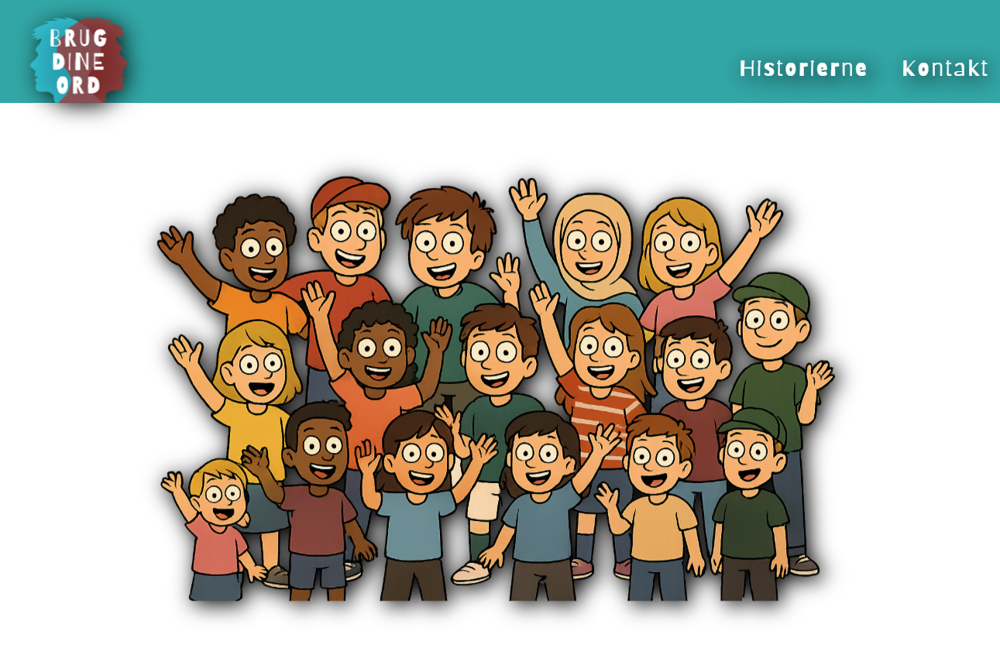
Desktop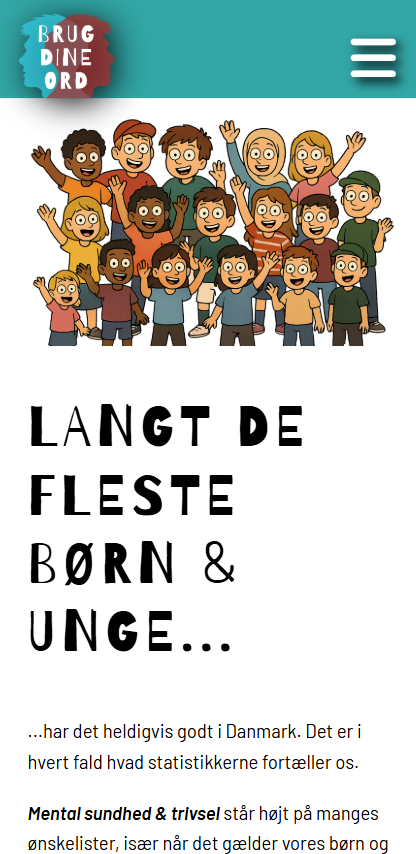
MobilSpread 02 · Brief & udfordring
Udfordringen
Opgaven var at designe og udvikle en responsiv, tilgængelig hjemmeside efter WCAG 2.2 — testet af rigtige brugere. Jeg valgte at gå efter et emne, hvor tilgængelighed ikke bare handler om compliance, men om at nå en målgruppe, der har det svært, og som normalt ikke bliver hørt.
En tryg, ikke-dømmende og handleorienteret platform med konkrete værktøjer til at udtrykke følelser med ord frem for handlinger.
Unge i udskolingen, der kæmper med udadreagerende adfærd.
"Her får du værktøjer til at sige, hvad du føler — uden at råbe, smadre eller gå i baglås."
Psykoterapeut Lykke Rosenkrantz (indhold/faglighed) — jeg stod for koncept, UX og teknisk udvikling.
21.11.2025 · Individuel opgave
Spread 03 · Research
At forstå den, ingen lytter til
For at ramme målgruppen ærligt tog researchen udgangspunkt i et virkeligt læserbrev fra en 19-årig mand om ukontrolleret vrede — ikke en opdigtet problemstilling. Det blev fundamentet for et empathy map og en konkret målgruppeprofil.
unge underretninger i 2024 skyldes "anden bekymrende adfærd hos barnet eller den unge, fx udadreagerende adfærd" (Danmarks Statistik)
"Jeg føler lidt, at hun glemte lidt, at det faktisk var et barn, hun havde med at gøre."
Føler sig overhørt — oplevede at voksnes "faglige vurdering" vejede tungere end eget behov.
"Det er nok mig, der er problemet." "Jeg skal passe på hvad jeg siger."
Frustreret, overset, ude af kontrol.
Kaster med ting, smækker med døre, isolerer sig.
 Empathy map
Empathy map
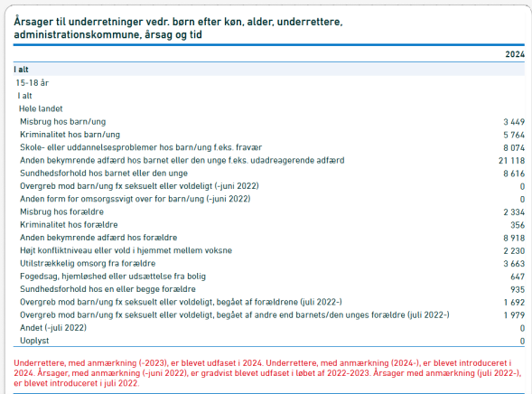
DST-statistikSpread 04 · Målgruppe & koncept
Fra citater til Anton
Projektet startede med rigtige stemmer, ikke en tegnet figur. Målgruppearbejdet tog udgangspunkt i konkrete historier om unge i konflikt, og den første persona blev bygget som et klassisk, skriftligt profilark.
Først undervejs i processen opstod idéen om Anton, som vi kender ham i dag. Ved at bede ChatGPT om at generere et billede ud fra persona-profilen, fik jeg en løsning på en udfordring, jeg ikke vidste jeg havde: hvordan holder man tonen neutral, når man taler om et følsomt emne til en bred, sårbar målgruppe? Et AI-genereret, repræsentativt "ansigt" gjorde det muligt at tale om afmagt uden at pege på nogen bestemt, virkelig ung person.
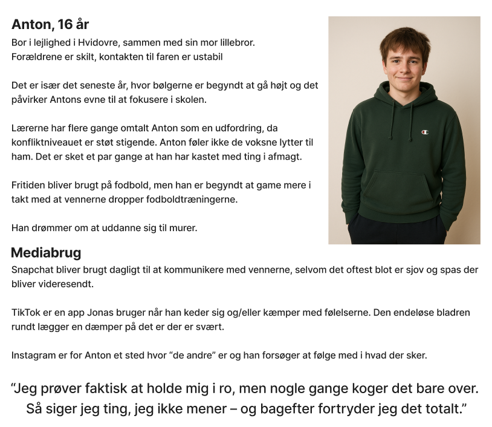
"Jeg prøver faktisk at holde mig i ro, men nogle gange koger det bare over. Så siger jeg ting, jeg ikke mener — og bagefter fortryder jeg det totalt."
Sidens navn, brugdineord.dk, er en direkte opfordring til Anton — og til de unge, der spejler sig i ham. Ved at lade Anton fortælle sin egen historie først, viser siden en konkret strategi, brugeren frit kan tage med sig, uden at skulle "committe" sig til noget først. At Anton er AI-genereret og først opstod midtvejs, er samtidig et konkret eksempel på den iterative designproces: en løsning, der opstod, fordi et problem viste sig undervejs — ikke noget, der lå fast fra start.
Spread 05 · Adfærdsdesign
Nudging i praksis
Målet var at give unge en ny strategi at reagere med — ikke ved at belære, men ved at vise vejen.
Framing
En tryg og klar ramme omkring et emne, der normalt er svært at tale om: afmagt. Anton er genkendelig for målgruppen, og gentagende struktur på tværs af siderne skaber troværdighed.
Reciprocitet
Anton åbner selv op om sin strategi, uden at brugeren behøver at give noget til gengæld først. Når strategien virker for brugeren, er der langt større chance for, at de selv deler deres udfordring.
Social proof
DST-tal, "mest læste historier" og en tælle-boks for ugens henvendelser viser brugeren, at de langt fra er alene med deres afmagt.
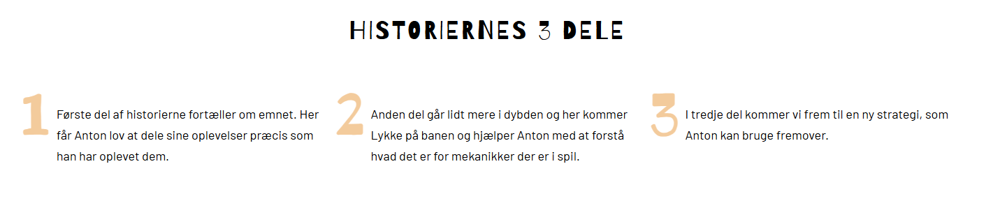
Historiernes 3 dele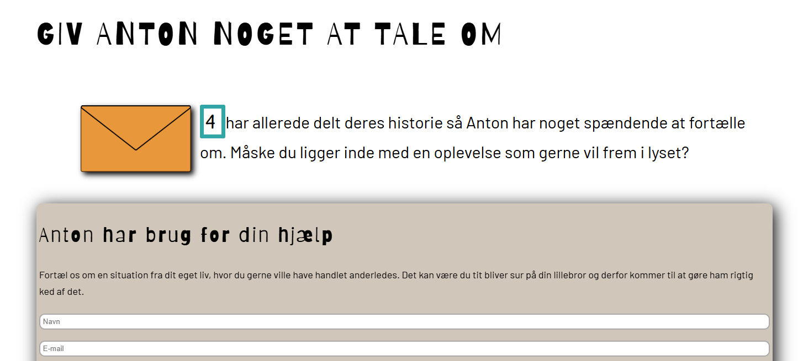
Opfordring til at dele egen historieSpread 06 · Designproces
Fra idé til grid
Processen gik fra moodboard og styletile til lo-fi wireframes og til sidst et kodet, responsivt site — med et bevidst valg om at holde samme farver og skrifttype hele vejen igennem.
Barriecito (overskrifter) · Barlow (brødtekst)
Simpel · naturlig · balance · ro · blid · cool
Moodboard
Mental sundhed hos unge
Persona-ark
Målgruppetabellen, før Anton fik et ansigt
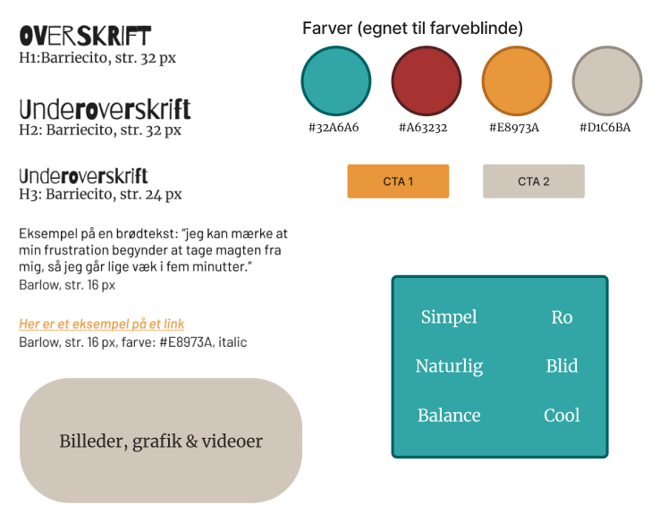
03Styletile
Farver, typografi, mood
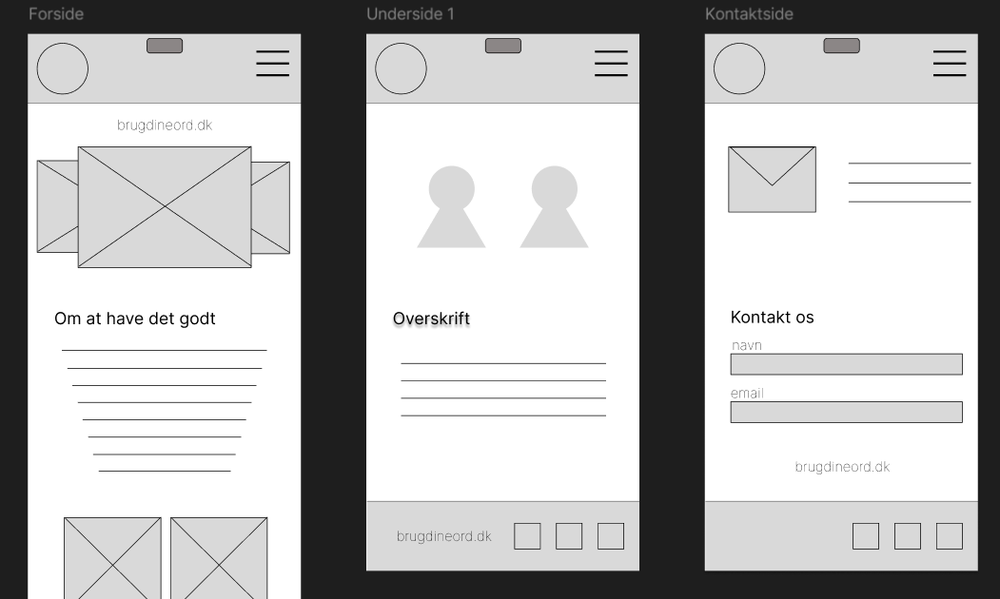
04Wireframes
Lo-fi: forside, underside, kontaktside
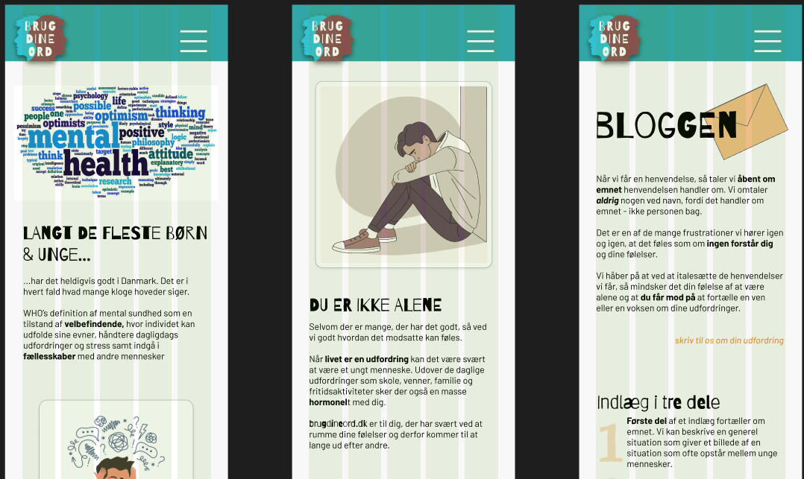
05Færdigt site
Kodet, responsivt — med AI-genererede Anton
Anton-figuren opstod som nævnt på forrige spread midtvejs i processen via ChatGPT — endnu et eksempel på, at processen ikke var lineær.
Spread 07 · Tilgængelighed
Tilgængelighed er ikke en tjekliste — det er hvem, der bliver hørt
Den unge målgruppe er ofte påvirket af koncentrationsbesvær, hormonel ubalance, ordblindhed og farveblindhed. WCAG 2.2's fire principper blev brugt som konkret designværktøj, ikke bare dokumentation.
Perceivable
Alt-tekst på billeder med betydning for budskabet, logisk læserækkefølge til skærmlæsere, tydelige link-/knapbeskrivelser.
Operable
Brødkrummer på alle sider, fast navigation der følger med ved scroll — vigtigt for en målgruppe, der let mister overblikket.
Understandable
Tone-of-voice målrettet unge, genkendelige layoutelementer på tværs af siderne, farvekontraster testet for farveblindhed.
Robust
Grid-baseret, responsivt layout, så indholdet holder sig intakt på tværs af enheder.
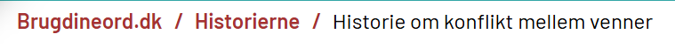
Brødkrummer / navigation på sitet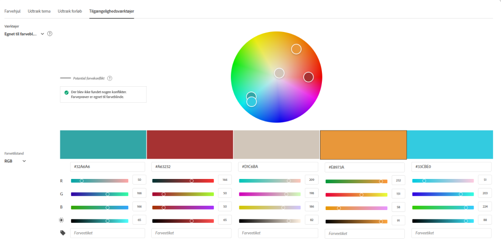
Adobe Color-farvehjul fra styletile-researchenSpread 08 · Test & feedback
Holder idéen vand?
Da konceptet stadig var i sin vorden, blev brugertesten designet til at teste selve idéen — ikke detaljerne. Hypotesen: en AI-agtig karakter som Anton får unge til at udforske siden og i sidste ende dele deres egne historier, fordi det er kreativ storytelling i et delbart, nutidigt format.
6-sekunders scroll-video af mobilsitet, delt via egne SoMe-kanaler.
Spørgeskema med 26 randomiserede ord, heraf 6 målord.
19 besvarelser i alt — fokus lagt på de 3, der matchede målgruppen.
Kreativ · Simpel · Ro
Kedelig · Forvirrende · Ufærdig
Hvad testen ændrede: Det "ufærdige" indtryk betød, at små detaljer blev strammet op, og at storytelling-elementet (bl.a. via de 6 C'er) blev styrket for at gøre indhold og design mere levende og målrettet.
Spread 09 · Det færdige resultat
Brugdineord.dk
Det færdige site samler Anton, adfærdsdesign og tilgængelighed i én sammenhængende oplevelse — testet, justeret og klar til at blive brugt.
Forside
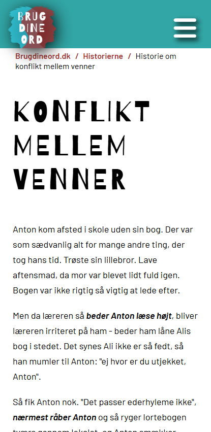
Historie: Konflikt mellem venner
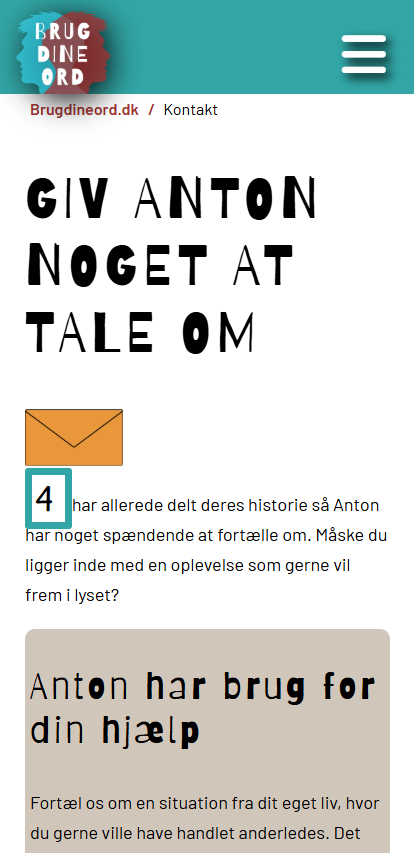
Kontaktside
heididesire.dk/brugdineord
Spread 10 · Refleksion & læring
Karakteren, jeg valgte at vise frem
— den eneste karakter i hele studieforløbet, der ikke blev en 10.
Det ærlige svar er, at jeg blev så grebet af emnet og min egen research, at jeg undervejs glemte, at opgaven i bunden handlede om webtilgængelighed. Det er derfor, det her er det eneste projekt på hele studiet, jeg ikke fik topkarakter for. Men det er også præcis derfor, jeg har valgt netop det som case study.
Jeg ved præcis, hvorfor karakteren ikke afspejler idéen, energien eller ambitionen i projektet — den afspejler den faglige udførsel, bedømt på webtilgængelighedens egne, snævre præmisser. Næsten et år efter er det stadig det projekt, min omgangskreds spørger ind til. Det siger noget om, hvad der opstår, når man tør lade et alvorligt emne vokse sig stort og stærkt, selv når det trækker fokus fra den oprindelige opgave.
Jeg viser karakteren, fordi jeg ikke er bange for den. Den er ikke et symbol på et dårligt projekt — den er et symbol på, hvor let det er at blive revet med af noget, der er værd at blive revet med af.
At tilgængelighed er stærkest, når det er indbygget i konceptet fra start — ikke lagt oven på bagefter.
At en brugertest tidligt i processen kan redde et koncept, selv når resultaterne er ubehagelige at læse.
At faglig disciplin og passion for et emne ikke altid trækker i samme retning — og at det er en balance, jeg tager med mig ind i alle projekter siden.
Da jeg viste Anton frem for min omgangskreds, var opbakningen langt større, end jeg havde forventet — flere blev direkte skuffede over, at det "bare" var et studieprojekt, og ikke noget jeg ville gå videre med. Det siger nok mest om, hvor stærkt et koncept kan blive, når det tager udgangspunkt i noget ægte — men det er givetvis også en historie for en anden dag.
Under opbygning: teksten på alle 10 spreads er endelig og godkendt, og de fleste billeder er nu sat ind. Fem billeder mangler stadig — de mærkede bokse ovenfor viser, hvad de skal vise: målgruppetabellen fra før Anton fik et ansigt og skærmbilledet af den oprindelige ChatGPT-samtale (spread 4), moodboardet og persona-arket i procesrækken (spread 6), samt et udsnit af spørgeskema-resultaterne (spread 8).
← Tilbage til case studies